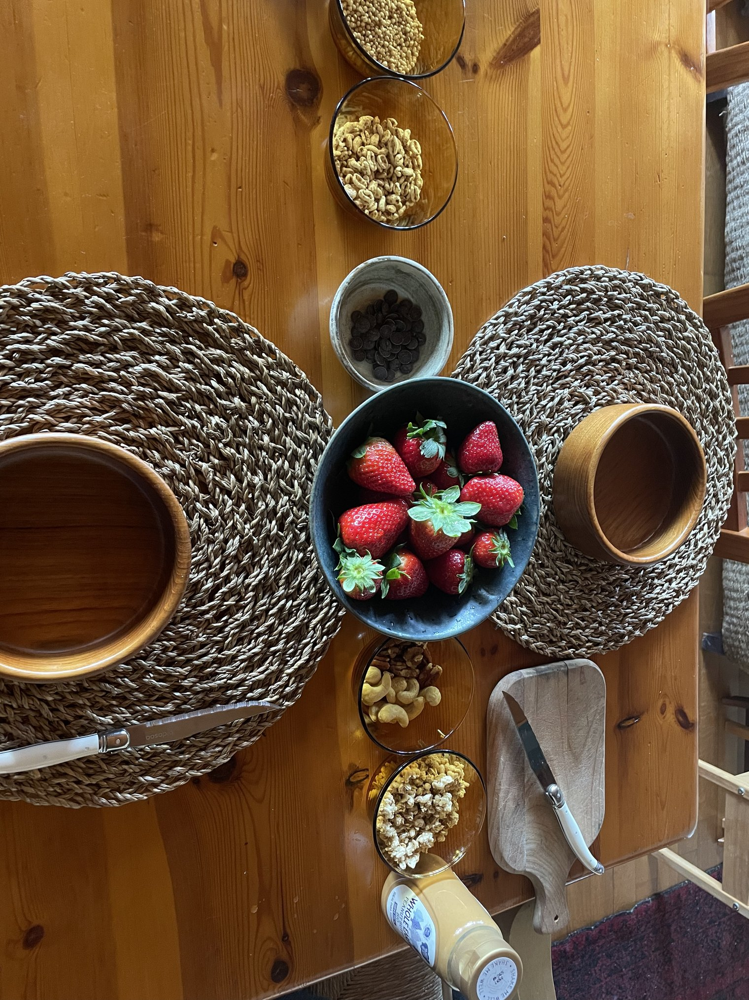
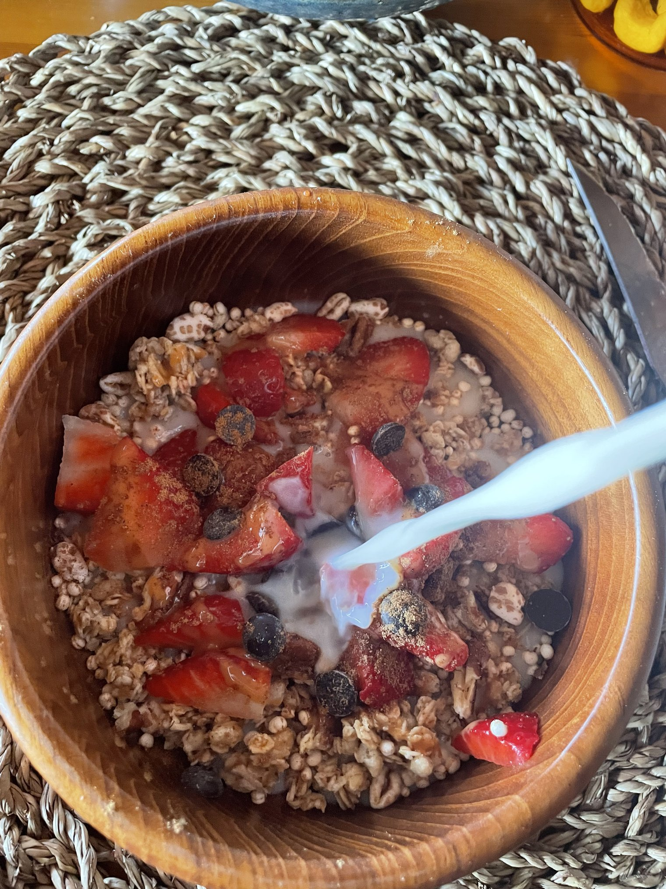

Bol de cereales con fresas y frutos secos
Ingredients
2×
- 60 g de granola y cereales inflados
- 8 fresas
- 1 puñado de cacahuetes y anacardos
- 1 cda de pepitas de chocolate
- pizca de canela
- 300 ml de bebida vegetal
- crema de cacahuete

Preparación
Paso 1
Poner en cada bol 60 g de granola y cereales inflados.
Paso 2
Añadir 8 fresas troceadas, 1 puñado de cacahuetes y anacardos, 1 cda de pepitas de chocolate y una pizca de canela.
Paso 3
Verter 300 ml de bebida vegetal y, si se quiere, un poco de crema de cacahuete.
